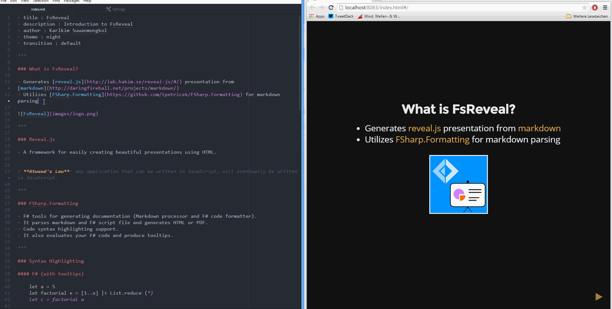

FsReveal
FsReveal allows you to write beautiful slides in Markdown and brings C# and F# to the reveal.js web presentation framework.

Features
- Write your slides in Markdown or .fsx files
- Automatically updates the browser in edit mode on every save
- Syntax highlighting for most programming languages including C#, F# and LaTeX
- Speaker notes; Shows the current slide, next slide, elapsed time and current time
- Built in themes
- Horizontal and vertical slides
- Built in slide transitions using CSS 3D transforms
- Slide overview
- Works on mobile browsers. Swipe your way through the presentation.
Getting started
- Read the getting started tutorial
- Checkout the formatting docs to learn how to style your slides.
Examples
Check out what others have created. Submit a PR if you have something to add to the list.
- Markdown example by @kimsk (source)
- .fsx example by @kimsk (source)
- Paket - Intro by @sforkmann (source)
- FAKE - Intro by @sforkmann (source)
- RPG F# Workshop by @troykershaw (source)
- F# on the Web - 0 to production in 12 weeks by @panesofglass (source)
More samples can be found in the formatting docs.
Contributing and copyright
The project is hosted on GitHub where you can report issues, fork the project and submit pull requests on the develop branch. If you're adding new public API, please also consider adding samples that can be turned into a documentation. You might also want to read library design notes to understand how it works.
The library is available under MIT license, which allows modification and redistribution for both commercial and non-commercial purposes. For more information see the License file in the GitHub repository.